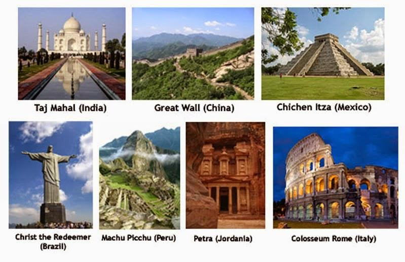

7 Keajaiban Dunia
Daftar 7 Keajaiban Dunia Terbaru – 7 Keajaiban Dunia Terbaru atau dalam bahasa Inggris disebut dengan New 7 Wonders of the World secara resmi ditetapkan oleh sebuah organisasi yang bernama New 7 Wonders Foundation pada tanggal 07-07-07 (tanggal 07 Juli 2007) di Lisbon, Ibukota Portugis . New 7 Wonders Foundation yang berkantor pusat di Zurich Swiss ini memilih 7 Keajaiban Dunia Terbaru melalui pemungutan suara yang secara keseluruhan jumlah suaranya lebih dari 100 juta voting terhadap situs-situs penting atau bangunan-bangunan penting peninggalan sejarah.
Dari kesekian banyak situs sejarah di seluruh dunia, hanya 21 situs yang berhasil lolos sebagai finalis dan 7 diantaranya yang terpilih menjadi 7 Keajaiban Dunia Terbaru (New 7 Wonders of the World).